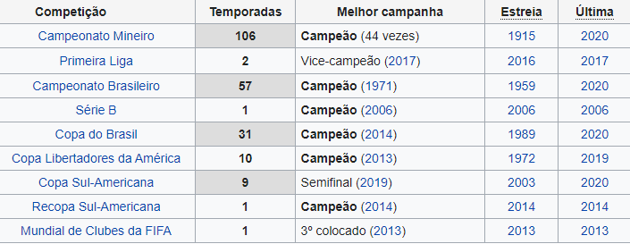

O Clube Atlético Mineiro (conhecido apenas por Atlético e cujo acrônimo é CAM) é um clube brasileiro de futebol sediado na cidade de Belo
Horizonte, Minas Gerais. Fundado em 25 de março de 1908 por um grupo de estudantes, tem como suas cores tradicionais o preto e o branco.
Contudo, o clube teve como primeiro nome Athlético Mineiro Football Club . Seu símbolo e alcunha mais popular é o Galo, mascote oficial
no final da década de 1930. O Atlético é um dos maiores e mais populares clubes de futebol do Brasil .
Embora tenha atuado em outras modalidades esportivas ao longo dos anos, seu reconhecimento e suas principais conquistas
foram alcançados no futebol. O clube é o maior campeão do Estado de Minas Gerais, com 44 títulos do Campeonato Mineiro,
além de ser o maior vencedor do Clássico Mineiro, com uma grande vantagem contra seu rival, o Cruzeiro. A nível nacional,
foi campeão brasileiro uma vez, em 1971, e conquistou outros três títulos nacionais oficiais: a Copa dos Campeões (FBF)
em 1937, a Copa dos Campeões (CBD) em 1978, e a Copa do Brasil, em 2014. Na esfera internacional, possui quatro títulos oficiais:
uma Copa Libertadores da América, duas Copas Conmebol e uma Recopa Sul-Americana. Um outro grande feito do Atlético é o de ser,
junto ao Dublin-URU, Santa Cruz, Arsenal-ING, e do Flamengo, um dos 5 únicos clubes do mundo que já venceram a Seleção Brasileira
de Futebol.
De modalidades esportivas importantes ao longo da história atleticana, destacam-se o voleibol, onde o clube é ainda hoje o segundo maior
campeão estadual (apenas atrás do Minas Tênis Clube). O atletismo rendeu ao clube três conquistas na Corrida Internacional de São Silvestre,
conquistados por João da Mata (1983) e Robert Cheruiyot (2007) no masculino, e Alice Timbilili (2007) no feminino. No futsal, o Atlético
Pax de Minas, através de craques como Manoel Tobias e Falcão, dominou o Brasil e o mundo, conquistando títulos como a Taça Brasil em 1985,
a Liga Futsal em 1997 e 1999, e a Copa Intercontinental em 1998.
História
O Clube Atlético Mineiro foi fundado em 25 de março de 1908 por um grupo de estudantes
de classe média em Belo Horizonte. Quase um ano após seu surgimento o Atlético disputou
sua primeira partida oficial: em 21 de março de 1909 venceu o Sport Club Foot-Ball por
3x0. O autor do primeiro gol foi Aníbal Machado, que anos mais tarde se transformaria
em um dos grandes escritores da Literatura Brasileira por meio de sua obra principal:
Viagem aos Seios de Duília. Alguns anos se passaram até que em 1914 a Liga Mineira de
Esportes realizou a primeira competição oficial em Minas Gerais: a Taça Bueno Brandão.
O torneio foi patrocinado pelo governador Júlio Bueno Brandão, o Atlético foi o campeão.
No ano seguinte, foi realizado o primeiro Campeonato Mineiro da história, também vencido
pelo Atlético. As duas grandes conquistas não significaram o prenúncio de uma
hegemonia, pois foi o América Futebol Clube o dominador do futebol local por aqueles
anos conquistando dez campeonatos estaduais consecutivos (1916 a 1925). Também Foi por
essa época que Atlético e América passaram a protagonizar o Clássico das Multidões.
Para voltar a ser o protagonista do futebol mineiro, o Atlético reuniu uma grande equipe dirigida
por Chico Neto, e posteriormente por Eugênio Medgyessy, e que contou com jogadores renomados como
Carlos Brant, Nariz, Mário de Castro, Jairo e Said; sendo que os três últimos formaram uma das mais
famosas linhas de ataque do período amador do futebol brasileiro: o Trio Maldito. Foi com esse time
que o Atlético conquistou os títulos do Campeonato Mineiro de 1926, 1927, 1931 e 1932. O clube passou
a experimentar um crescimento dentro e fora de campo: em 30 de maio de 1929 o Atlético inaugurou
o Estádio Antônio Carlos, o primeiro estádio de Minas Gerais a possuir iluminação para jogos noturnos.
A iluminação foi inaugurada em 9 de agosto de 1930 e contou com a presença do presidente da FIFA,
Jules Rimet. Em 1 de setembro de 1930 o Atlético disputou a primeira partida internacional realizada
em Minas Gerais. O time mineiro derrotou por 3 a 1 o Vitória de Portugal, campeão do Campeonato de
Setúbal nas temporadas de 1927/1928 e 1928/1929, e do Campeonato de Lisboa nas temporadas de 1923/1924
e 1926/1927.
No final da década de 1930 o Atlético —que tinha Kafunga, Zezé Procópio[44] e Guará
— conquistou os títulos do Campeonato Mineiro de 1936, 1938 e 1939; os primeiros na
fase profissional do futebol brasileiro.[46] Por esse tempo a rivalidade entre Atlético
e Cruzeiro transformou-se no Clássico Mineiro. As décadas de 1940 e 1950 foram ainda mais
gloriosas para o clube: em 20 anos o time conquistou 12 campeonatos —incluindo um pentacampeonato
(1952 a 1956)— graças a craques como Murilo Silva, Bigode, Mexicano, Barbatana, Zé do Monte,
Alvinho, Nívio Gabrich, Vaguinho, Carlyle, Orlando, Ubaldo Miranda, Paulo Valentim e Lucas Miranda,
entre muitos. As duas décadas seguintes não foram tão prósperas: de 1960 a 1978 o Atlético
conquistou apenas os títulos do Campeonato Mineiro de 1962, 1963, 1970 e 1976; no time estiveram
nomes como Veludo, Mussula, Marcial de Mello, Djalma Dias, Procópio Cardoso, Grapete, Vanderlei
Paiva, Ronaldo, Buglê, Buião, Lola, Dadá Maravilha e Tião, além de técnicos como Fleitas Solich.
No entanto, de 1978 a 1989 o Atlético conquistou nada menos que 11 campeonatos em 14 anos —incluindo
um hexacampeonato (1978 a 1983)— sendo comandado magnificamente por estrelas como João Leite,
Vantuir, Luisinho, Nelinho, Toninho Cerezo, Elzo, Palhinha, Zenon, Renato Morungaba, Ângelo,
Marcelo Oliveira, Paulo Isidoro, Ziza, Éder Aleixo, Éverton Nogueira, Sérgio Araújo e Reinaldo.
Nas décadas de 1990 e 2000 o clube viveu momentos variados e conquistou apenas os títulos de 1991,
1995, 1999, 2000 e 2007; os destaques do período foram Carlos, Taffarel, Velloso, Cléber, Caçapa,
Galván, Mancini, Paulo Roberto, Doriva, Gallo, Gilberto Silva, Robert, Belletti, Lincoln, Gérson,
Euller, Renaldo, Marques e Guilherme; além de Diego Alves, Danilinho e Éder Luís, responsáveis
pelo título de 2007.[67] Na presente década, o Atlético conquistou os títulos do Campeonato
Mineiro de 2010, 2012, 2013, 2015 e 2017; tendo em seu time grandes estrelas como Victor, Bernard,
Jô, Diego Tardelli, Ronaldinho, Robinho e Fred; além de técnicos de fama internacional como
Vanderlei Luxemburgo.
Títulos

Foto da tabela de campeonatos ganhos pelo Atlético MG
Curiosidades
Rivalidades Estaduais
O maior rival do Atlético é o Cruzeiro, clube popular que divide a preferência dos torcedores de Minas Gerais.
Também chamado de Clássico Mineiro, o confronto trava a maior rivalidade do estado desde o início dos anos 1960 com a inauguração do Mineirão.
A primeira partida ocorreu no dia 17 de abril de 1921 em um amistoso realizado em Belo Horizonte, onde o Cruzeiro derrotou o Galo por 3 a 0. Entretanto, o Atlético carrega consigo a vantagem histórica nas estatísticas dos clássicos há décadas, além de possuir a maior vitória dos confrontos, na qual destruiu o Cruzeiro por 9 a 2 no dia 27 de novembro de 1927 no Campeonato Citadino de Belo Horizonte.
Em Campeonatos Brasileiros, o Atlético teve a oportunidade de eliminar o maior rival em duas oportunidades: nas quartas-de-finais de 1986 (dois empates bastaram para a classificação às semifinais) e em 1999, também nas quartas-de-finais (4 a 2 na ida e 3 a 2 na volta).
Na Copa do Brasil, Atlético Mineiro venceu os dois jogos contra o Cruzeiro. O primeiro, no Estádio Independência por 2x0, gols de Luan e Dátolo. E no jogo de volta, Atlético bateu o time celeste pelo placar mínimo, gol de Tardelli, assim, se sagrado campeão da Copa do Brasil.
Outros Clássicos Estaduais
O clássico entre Atlético e América, também chamado de Clássico das Multidões foi considerado o confronto de maior rivalidade de Minas Gerais por muitas décadas na história do futebol mineiro. A primeira partida ocorreu em 1913 após empate em 1 a 1. O Galo possui uma notória vantagem histórica nos confrontos contra o América Mineiro. No século XXI, Atlético e América travaram duas finais de Campeonato Mineiro: em 2001, vitória do América (4 a 1 na ida e 1 a 3 na volta), e em 2012, título atleticano após empate no primeiro jogo por 1 a 1 e goleada por 3 a 0 no jogo da volta.
Atlético MG e Villa Nova é o clássico mais antigo e aquele que envolve os dois clubes mais antigos do futebol de Minas Gerais ainda em atividade.
Mascote
O principal mascote do Atlético Mineiro é o Galo, que foi desenvolvido pelo chargista Fernando Pierucetti, o Mangabeira, no final dos anos 1930 e redesenhado em 1945 com a justificativa de que o "O Atlético sempre foi um time de raça. Mais parece um galo de briga, que nunca se entrega e luta até morrer". A popularização do mascote se tornou forte a partir dos anos 1950 e logo após a inauguração do Mineirão, na qual os torcedores do Atlético adotaram como grito de guerra o mascote do clube. A intensa identificação entre o mascote e a torcida pôde ser vista já em 1976, quando o Atlético se tornou o primeiro clube do mundo a utilizar mascotes mirins fantasiados de Galo na entrada em campo do time. Em uma partida válida pelo Campeonato Brasileiro de 2005 contra o Flamengo, outra novidade: nasce o personagem Galo Doido, o famoso mascote que acompanha os jogos do Atlético.
Hino
Em 1969, um mineiro natural de Montes Claros, chamado Vicente Motta, foi convidado por Alberto Perini, membro da diretoria do Galo para que compusse um novo hino para o Atlético Mineiro.
Motta, que vencera os dois últimos concursos de marchinhas de carnaval de Belo Horizonte, recebeu algumas exigências: o hino deveria exaltar a campanha vitoriosa de 1950 na Europa e a conquista do título de Campeões dos Campeões em 1937. O lado vingador do Galo também não deveria ficar de fora.
Sede social
A sede de Lourdes é um prédio de dois andares no bairro Lourdes em Belo Horizonte, onde funciona o setor diretivo e administrativo do C.A.M. Foi fundado em 1962, na data do aniversário do clube. Também abriga a Sala de Troféus Vilibaldo Alves e o Auditório Elias Kalil.
Loja do Galo
Em dezembro de 2001 o Clube Atlético Mineiro iniciou a parceria com a Roxos e Doentes, empresa responsável pela administração da Loja do Galo, inaugurando, assim, uma loja temática própria. Com um projeto moderno, a Loja do Galo constitui o principal canal de varejo do clube, atuando hoje com seis unidades na cidade de Belo Horizonte. Em 2003, surgiu a Galo Express, primeira loja móvel de artigos de futebol do país, e iniciou-se a comercialização de produtos oficiais através da internet, na loja virtual.
Em maio de 2007, em mais uma iniciativa pioneira, o Clube Atlético Mineiro lançou o projeto de expansão da Loja do Galo em parceria com a empresa Francap (Franchising Capital Parters), responsável pela seleção dos franqueados. Desde então, já foram criados quatro contratos de franquia. Assim, também há mais cinco lojas espalhadas pela Grande Belo Horizonte.
Centro de Treinamento: A Cidade do Galo
A Cidade do Galo é o maior e mais completo centro de treinamento e concentração da América do Sul e foi construído na cidade de Vespasiano.
Em uso desde 1999, encontram-se em execução as obras do alojamento das categorias de base, com estrutura completa inclusive para acompanhamento escolar, e capacidade para 60 (sessenta) jovens. A etapa seguinte, será a conclusão das obras da concentração da equipe profissional com vinte apartamentos duplos, restaurante, cozinha industrial, auditório completo e área de lazer com piscina e salão de jogos.
Em 2014, a Cidade do Galo foi o centro de treinamento da Seleção Argentina de Futebol durante a Copa do Mundo.
Foi considerado como o melhor centro de treinamento do Brasil em 2010 e um dos cinco melhores centros de treinamento do mundo (único fora da Europa) em 2014 pelas emissoras de televisão SporTV e Eurosport, respectivamente.
Foto da Cidade do GaloFoto da Cidade do Galo vista por cima
Shopping do Galo: Diamond Mall
O Diamond Mall é um shopping center na cidade de Belo Horizonte, que foi inaugurado em 1996. Localizado na Avenida Olegário Maciel, no bairro de Lourdes, ao lado da sede social do clube, é um dos mais modernos e luxuosos shoppings do estado de Minas Gerais.
Vila Olímpica
A Vila Olímpica foi construída em 1973 e foi palco da preparação da Seleção Brasileira para a Copa do Mundo de 1982, e do Atlético Mineiro principalmente na década de 1970. Fazem parte da sua estrutura: campo de futebol com um gramado de alta qualidade, departamento médico, salão social, moderna e confortável sauna, academia de ginástica, parque aquático e restaurantes.
Como está o time atualmente
Jogadores Atuais
Lista de jogadores do Atlético MG
Uniforme
Uniforme do Atlético MG
Projetos Futuros: Novo Estádio do Atlético MG
Com previsão de inauguração para 2022, a casa do Atlético-MG segue os passos de alguns grandes clubes do mundo, como Juventus e Peñarol, e tem custo previsto de R$ 410 milhões.